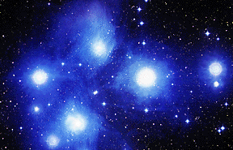

Estrelas mudam com o tempo. Podem demorar milhares a bilhares de anos pra uma estrela viver sua vida. E isso é muito, muito tempo!

Uma estrela é uma grande bola de gás que emite luz e calor. Mas de onde vêm as estrelas? O que acontece quando elas envelhecem?
Uma galáxia contém nuvens de gás e poeira, e também estrelas. Dentro das nuvens de gás e poeira é onde as estrelas nascem. Enquanto mais e mais gás (em sua maioria hidrogênio) é puxado para dentro da nuvem pela gravidade, a nuvem começa a girar. Os átomos do gás começam a colidir uns com os outros mais e mais rápido, gerando energia calorífica. A nuvem fica mais e mais quente. Finalmente, fica tão quente dentro da nuvem que a chamada "fusão nuclear" acontece. A nuvem começa a brilhar. Essa nuvem brilhante é conhecida como protoestrela. A protoestrela continua a crescer. Uma vez que ela pára de crescer, ela é conhecida como uma estrela da seqüência principal. Uma estrela da seqüência principal pode brilhar por milhões de anos ou mais. Seu tempo de vida é determinado pelo seu tamanho.